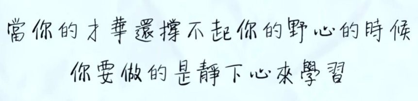
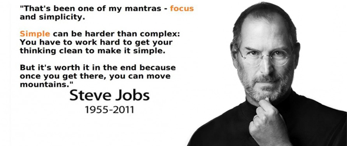
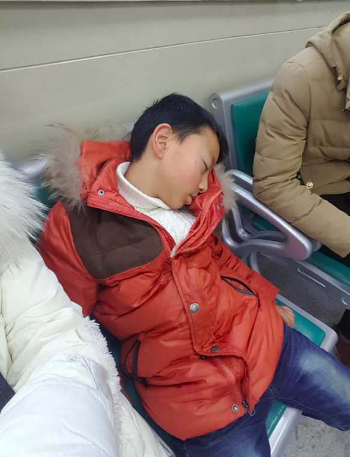
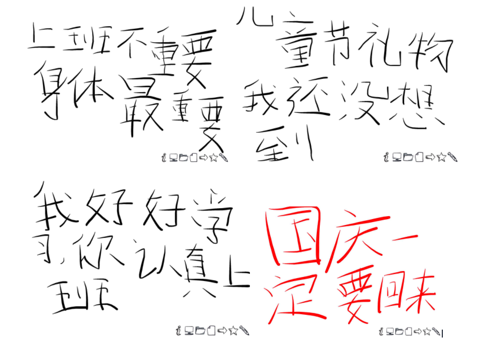
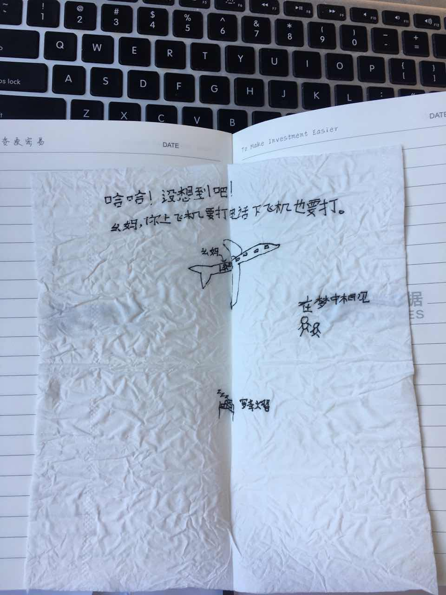
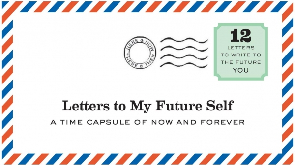

工作 3 年后的一些思考【Part 3】
2017-06-16
7. 爱你所做，做你所爱
相信大家也经常听到，看到，遇到一些朋友，同事说自己对正在做的事情很不感兴趣，完全背离了学生时代的梦想。其实，我也一样，我从小就特别喜欢玩具模型，四驱车，遥控车，遥控飞机，轮船，甚至还想做个遥控的潜水艇,去长白山天池水下看看是不是真的有水怪存在。可是大四找工作的时候，如果我去做这些我喜欢的事，面临两个很大的问题：第一是当时【甚至现在也一样】以这些为主营业务的公司非常少，大都是一些玩具型厂商，而非专业的模型研发，生产，制造和销售公司【当时专业的大都是国外公司】，除了国内一家，深圳大疆创新，但是我又不想去深圳，只想在上海呆，所以这个问题很难解决；第二也算个好的方案，就是回家去开个模型店，经营得好也能活得不错，可是这样一来启动资金要很多钱【要知道真正的玩具模型，一个发动机都是3位数起的】，而且我也不想在人生最具备成长性的这个阶段就创业，很想在一些大公司学习和研究一段时间。
所以，很自然的，我就决定先找一个能帮助自己有所成长的职业，并且是一个自己还算喜欢和接受的行业、工作岗位来学习。至于上面所谈到的梦想或爱好，可以先搁置下来，作为一个业余的兴趣，花一些业余的时间的去关注关注。只要能做到当未来某一天再继续玩这些模型的时候，不会手生即可。
实话实说，其实当时我做这个决定也没那么难。因为自己可选的还挺多，最后决定加入现在的这家公司，做金融相关的研究和开发工作，业余也确实在关注航模，车模方面的产业动态，发现最大的变化是现在电池好像都升级了，价格也比之前便宜一些，不过社区却比之前人气低迷了不少。我一直关注的社区叫模型中国，不过在我接触这个论坛的时候，它其实叫模型三国【mx3g】呢，那会儿我是初二到初三之间，大概是 2006 ~ 2007 年这个时间段，想想到现在都过去 10年+ 了，我还像当初一样喜欢玩这些东西，而且现在也有钱玩了，想想也挺幸福的啊。还记得当时第一次买零件的时候，好像是因为没有身份证，淘宝上不能在线支付，我还是先给卖家把钱从 atm 上转过去，然后卖家再发货，当时真担心上当受骗，哈哈。不说了，一说到这个我就停不下来，有趣的事实在太多了，越扯越远了。
说了这么多，其实我想跟大家分享一个自己的领悟，那就是当自己不能按自己的想法去做自己爱做的事情的时候，就努力爱上现在正在做的事情，把现在做的事情做好，相信一定会有一天，当你准备好了，没有顾虑了，一定可以接着去做自己想做的事的。而且这个过程其实会打开你的另一个世界，让你发现原来这个世界上除了你喜欢的事情，还有很多你尚未发现但是也很有趣的东西。
比如说我在公司呆了 3年+，几乎是从一个金融小白到现在还算走上正道了【这句话怎么听起来怪怪的，哈哈】，我发现其实金融这个东西特别有意思，甚至在某些程度上来说，应该是现代人必须掌握的一个基本技能。最常见的就是理财了，现在银行存款低得这么可怜，怎么合理规划适合自己的理财方案确实是个大问题。最常见的比如说银行理财产品，短中期基金理财产品，新型的互联网理财产品【P2P】，除了考虑到收益率外，还得考虑各个理财产品的期限，风险结构，要不万一全放银行定期理财，突然有急用的时候就苦逼了。现在已经看到一些专业的理财咨询师这个职业出现了，看吧，哪里有需求，哪里就有职位。往大了说，即使以后要创业，金融知识也是作为领导者，决策者必备的素养之一，比如说如何规划公司业务发展，如果判断公司中短期业务瓶颈，如何合理避税，甚至后期的如何扩充资本，如何开展投融资活动等。这些都需要理解掌握的深厚的金融知识，远远不是挖一个 cfo 来就能解决的。
现在回想，我还是很感谢自己当时的决定的。第一是这几年过得还算温饱，哈哈；其次是这几年学到的东西，增长的见识，我相信在未来无论我在哪里做什么，都会有莫大的帮助；最后当然是针对于金融这个职业，我还算是越来越入道了，也越来越喜欢了。
ok，最后再总结一些这个感悟吧：在能力撑不起梦想的时候，就努力把当前做到最好吧，沉下心来提升自己，毕竟来日方长。

8. Be focus
3 年前，我刚开始工作的时候，和很多毕业生一样心怀大志，觉得终于等到自己指点江山，激扬文字的时候了。可是现在再问我自己，完全没有了当时的年少轻狂，更多的是一份脚踏实地，专注于某一个方向认真发展自己的一种笃定。
在去年下半年的时候，我负责了项目的一个模块，算是一个金融方向比较专业，且国内没有这方面竞品的一个新东西，从头到尾自己兼任模块负责人，产品经理，开发，测试。然后上线后因为只有自己对那块业务比较熟悉，销售同学每次见相关的客户也需要我一起参与进去，所以去年下半年有一段时间自己跑了很多客户。一开始其实我特别有新鲜感，因为之前也不经常面对面的接触客户，只做过简单、非系统性的产品介绍和培训，并没有这么实打实，真枪实弹的去面对过客户。所以在见过几次客户后，发现自己基本上都能 hold 住大部分客户，心里就有点自我感觉良好，觉得自己技能做开发，还懂金融，还能跑客户，而且还年轻，岂不是一枚潜力股，前途可期啊。就自我得意了一段时间，直到后来有一次去拜访客户，交流得也比较不错，临走前客户问了问我们团队的人员结构，我特地说自己是做开发的，也做投资研究，然后还可以陪销售同学来跑跑客户。那位大佬说了句话，我至今记忆犹新，他说像我这么年轻的小朋友，什么都能做当然是最好，毕竟可以增长自己的知识面和锻炼各方面的能力，可是长期来看，还是得考虑考虑自己的核心方向，专注于先把一件事做到最好，想想自己未来几年的核心竞争力在哪儿。
当天回到公司，我就一直思考这个问题，客户说得没错，再过几年，其他同事都熟悉这个业务了，销售可以不用在跑了；投资研究有专业的同事在做，虽然说自己也可以偶尔一起做点东西，但专业性上目前来看毕竟有所欠缺；开发上自己负责的项目挑战都并不是特别大，技术上提高空间有限。如此这样发展下去，再过几年，不管是开发，投资研究，还是其他方面，自己很有可能不会在某一个方向上有很深的造诣，也就是说，自己开始缺乏核心的能力了。
当然，这些所有的假想，都是在自己不带任何团队，不创业，依然这样 “傻白甜”似的工作状态的假设下进行的。不过当时还真的是细思极恐，想想如果真的再过几年自己成为了假想中的样子，到时该肿么办呢？
当时反思了几天，想想自己以后想成为什么样的人，想想以后当别人提起我的时候，第一印象会是什么。后来我在自己的笔记本上做了个职业规划，重点就是写了自己最擅长做的事情，最喜欢做的事情，以及未来可以提升自己核心竞争力的事情，然后找这三个类别里重叠的地方，看看有多少是重叠的，并且再到重叠的事情里面列出一个优先级，根据自己的能力，精力来选前几件事情，作为一个职业发展规划来做这几件事情。
现在回想，当时真的挺感谢那位大佬跟我说的那几句话的，在我自我感觉良好的时候跟我敲了个警钟。最近半年，我发现不仅仅是个人职业发展规划里在初期的时候需要做到 focus，而且在产品发展的过程中也需要做到 focus。比如说一些产品，常常发现越做功能越丰富，但是最核心的功能往往没有得到改善。我自己感触较深的是两个产品，一个是迅雷，一个是有道词典，初期都特别好用，一个用来下载电影，一个用来查单词。但是越到后面越难用，甚至频频卡顿，铺天盖地的广告，糟糕的体验，臃肿的安装包，现在有道词典是很少用了，迅雷的话找到了一个精简版，其他什么毛线都没有，就简简单单的下载，很干净很好用。现实中很多产品，往往一开始起步很不错，能解决用户的核心痛点，但是经常性的越到后面越发难用，核心的东西做不深，倒是周边工具做了一大堆。明明用户只想要一台 12 缸的发动机，偏偏要把拖拉机的马达搭配富丽堂皇的车壳，再加个各种牛皮混杂的坐垫，各种宝石镶嵌的方向盘，只能说是本末倒置了吧。
所以，从我个人的一些简单经历和思考，我推荐不管在做职业规划还是在做产品的时候，需要认真考虑下 focus 的重要性。人们不会因为你什么都懂一点而看好你，更多的时候是会因为你是某一两个领域的佼佼者而为你竖起大拇指；人们不会因为一个产品功能丰富而买单，更多的时候是会因为这个产品里某个功能解决了他们的核心诉求。所以，在自己还没有核心竞争力之前，在产品还没有在某个领域做到足够顶尖之前，都请 be focus 吧，在这之后，当然可以发展其他更加丰富的技能和特点。

9. Be thankful
以前经常听这样一句话 “爱笑的女孩，运气都不会太差”，我想这句话改改，用在这个标题上，可以说 “怀揣感恩之心的人，运气也不会太差”。
都说养儿方知父母辛，其实有这个感悟，说来还真是跟 “养儿”这个话题有很大的关系的。熟悉我的人都知道我有一个十岁大的小侄儿，很可爱的小男生，每次我节气回家都是我来带，睡觉也是跟我一起。
有一次跟老姐聊天，姐跟我说了一件事，让我觉得这个宝贝小侄儿真是会“撩”。那天老姐们店里做促销活动，可能业务上没做好，被老大骂了。晚上姐回到家里心情很消极，眼睛都是红红的，儿子可能从来没看到妈妈这个样子，心里也不知道怎么安慰妈妈，就陪妈妈坐在沙发上，不疯玩打闹，给妈妈捶捶腿，然后说让妈妈不要难过，以后长大了一定会好好照顾妈妈的。老姐回忆说之前他重不知道儿子居然会说出这样的话来，而且当时还只是个6,7岁的小孩，整天有用不完的力气东打西闹，跟老妈吵架抵嘴是常有的事，才刚开始读书就闯了不少祸。我听说后也很惊讶，更多的是高兴，到今天那种感觉都还很深刻，小侄儿能说出这样的话，真的很懂事了。后来的一些事情也侧面证明了儿子这种关键时刻懂得关心长辈的性格。比如说去年姐姐，儿子陪老妈去省城看病，那几天看病期间儿子一点都没捣乱，甚至还帮姐姐和妈妈做了不少事，最后还在医院直接睡着了，下面是其中一天在医院椅子上睡着的照片。

后来，我慢慢发现小侄儿是那种平时看起来吊儿郎当的，但实际上内心情感还是很丰富懂事的。比如说，每次过年回家，我都把 ipad 带回去给他玩。有一次过年，在回上海前几天，我看见他老是躲着我们一个人在玩 ipad，当时很好奇他究竟在玩什么游戏，问了他也不说。后来有一次我们一起熬夜【我回家喜欢熬夜看电视，虽然有时候会困，但感觉还是很放松，现在我还有这个习惯，周五周六晚上都喜欢熬夜看电视看电影】，那天晚上我就假装很认真的跟儿子聊天，问他是在 ipad 上玩什么游戏，为什么都不想让大家知道。他这才松了口，原来是在 ipad 上给我写信，用一个叫 papers 的 app，在上面写给我看的字和画，哈哈，听到这个我还挺惊奇，这个娃还很会搞事情嘛。然后我就和他一起看他在 ipad 的上都写了哪些想跟我说的话，内容大家可以看看下面，哈哈：

不知道各位是否带过小孩，不过我想如果自己的孩子能写这样的话给你，相信看到的时候心里面都是暖暖的。今年端午因为一些事情我也回家呆了 3 天，忘记把 ipad 带回去了，小孩还说下次记得把 ipad 带回去，这样好给我写想跟我说的话。不过回上海后我还是发现了这个宝贝给我留的个惊喜，这次他在我的笔记本里夹了张纸巾，如下：

这几年里，虽然陪小侄儿的时间不多，但是在培养他的过程中，我自己也感触到了很多东西。比如说脾性变得更温和了，不那么愤世嫉俗；也更加有耐心了，遇事不那么急急燥燥；也更有担当了，凡事都会站出来，学会更加努力的保护家人和孩子。特别是更加懂得感恩之心的可贵可爱，当然并不是需要小侄儿从小就有立志努力学习，以后努力赚钱赡养长辈的这种心态，而是看到他对周围的人都有感恩之心，在大人们处理正事的时候能主动为长辈分担的表现，我们心里都是充满了足足的幸福感和成就感。
上面是我个人生活里的体会，职场上其实也有很多这样的例子。我觉得职场上要感谢的人其实挺多的，归纳下来可以分为 3 种：第一种是在关键时刻拉你一把的人；第二是培养，鞭策过你的人；第三就是你生活中，工作中周围的人和事。
第一种人一般都是人们口中常说的贵人，确实也值得这样称呼。就拿我自己打比方，当时毕业时有几个方向可选，纯互联网的几个，嵌入式开发的和目前这家金融科技的，一开始这家给的 offer 待遇并不是最好的，和一开始面试的时候一位 boss 说的有差异。当时如果单单从 offer 待遇上来考虑的话，可能会去其他公司，但是下决定之前，我还是想电话咨询下当时的那位老大，万一是中途有什么误会呢，还是说清楚比较好。可是我也木有他的电话呀，只有一开始电面我的面试官的电话，于是我就给电面的面试官打了电话【也是我加入公司到现在的部门负责人】，把情况给面试官说明了一下，当时面试官很 nice，说会给我联系老大处理一下。没想到上午刚打的电话，下午那位老大就给我电话回来了，说 offer 待遇的问题完全可以解决，让我放心，接着几分钟后公司 hr 就电话我，已经把新的 offer 文书发给我了。现在回想，如果没有当时面试官和那位老大的帮助，我可能就会选其他公司了，今天的我肯定和现在完全不一样，不论好坏，但至少所做的事和个人经验阅历肯定会完全不同了。不过其实我很满意现在的自己，不管所做的事，认识的人还是积累的经验和技能。所以直到现在，我心里还是很感谢当年面试官和老大的热心支援，我之所以能成为今天的自己，很大的原因都是因为当时他们在关键的时候拉了我一把。
第二种人也很少见。在培养人才上，每个企业都会很重视，但是更多的情况下，人们往往都会有所顾忌，会有人担心教好了徒弟饿死了师傅这样的情况出现。这种情况我们暂且不去批评好坏，但是不得不承认的确是有这种情况的存在的。所以一旦遇到一个可以，并且愿意培养你的人，那不可谓不幸运了。培养是一方面，鞭策是另一方面。相对于培养，愿意鞭策你的人通常来说会更少了。这样的人，就跟交心好友一样，一生难得遇到几个，但能遇到几个已经不错的了。他们不会每次都来提醒你，但他们的每一次提醒都会深刻的影响你的发展和规划。譬如之前给我的职业规划提出建议的那位大佬，没有他的一番话，也许我还会自我感觉良好，得意洋洋的什么都做，但最后却什么都做得不深入。
第三种人就很常见了，你生活中，工作中周围的人和事。可能有些人会疑惑，不是说不怕神一样的对手，就怕猪一样的队友吗？难道我还要感谢那些猪一样的队友？是啊，我有时候也会想，干嘛要去感谢那些猪一样的队友。可是凡事都可以从两方面来考虑呀，就跟投资一样，现在全市场有 3千 多只上市交易的股票，如果选潜力股很难的话，也可以先把垃圾股踢出你的股票池呀，构建一个质量略高的股票池，再到这个股票池里选吧，或者实在担心选不了，那就全买呗，美其名曰增强指数，哈哈。言归正传，为什么要感谢生活中那些猪队友，很简单，因为他们给你设立了一个警戒线，做事做人，如果你倾向，触碰到了那条警戒线，你就开始成为你眼中的猪队友了。so，这些人其实对你来说也挺重要的，虽然不能给你一个向前进的加速力，但是至少可以告诉你那些道是直的，那些道的弯的，right？解释完了垃圾队友这个问题，我们再看看最开始的观点，为什么要感谢你生活中，工作中的人和事。很简单，因为他们成就了现在的自己，不论好坏，他们都给你营造了你成长的环境，不管你是否喜欢这个环境，毕竟选择怎样成长的权利都在你自己，所以不要把自己的好坏全部归结于环境。之所以要感谢，因为你压根不确定换了个环境你能比现在好。
最后简单总结一下咯，常怀感恩之心，快乐他人，更快乐自己，人生苦短，多快乐快乐，哈哈。
10. 身体才是革命的本钱
这个问题最近半年考虑得比较多，不知道是因为听说一些同行业的发生猝死，还是经常看到一些年龄不大的同事居然有了白发。总之最近这方面考虑得确实听说的，也开始锻炼起身体来了，以前没注意身体，经常性早饭不吃就来公司了，食堂中午也吃不饱，下午也还要撑到 5~6 点才去食堂吃饭。
也不知具体是从哪个时候起，自己似乎突然间觉悟了。有句话不是经常听到嘛 “上半辈子用命换钱，下半辈子用钱换命”，我都不敢想象要是我这辈子活成这样的话，岂不白来世上跑一趟呀。而且现在老妈身体也不太好，自己可不能出啥毛病呀。一想到这些还真是头大，所以还是决定在努力工作的同时把身体搞好点，继续用 keep 来坚持锻炼，一般一个星期锻炼 4 天的样子，平均下来每天 20 ~ 30 分钟，强度还行。
这一点好像写得没啥感染力，不过都是大实话，哈哈。
11. 写给3年后的自己
本来是想写给未来的自己的，可是写给未来几年的自己呢？想想这篇 blog 不就是写自己的 3 年的总结的吗，何不就写给 3 年后的自己呢？所以就有了这个小标题。
其实 3 年说长不长，说短不短，到时候应该是 2020 ~ 2021 年了，我虚岁 30，也算是人生的一个标志点吧。回顾过去 3 年，再看看现在的自己，我挺希望自己 3 年后是这样一个样子的：
- 生活上
- 爸爸妈妈身体没有大的毛病，一家人每年能外出长玩一次；
- 侄儿初一，能适应初中学习节奏，给侄儿报个课外兴趣班，最好是科技班，这样我们可以继续一起玩玩具，哈哈；
- 全家应该已经搬到贵阳的大 house 里了，希望大家都适应新的环境；
- 和未来的老婆应该准备迎接第一个小生命了吧；
- 把书房改造成玩具工作室，节气回家就和侄儿做玩具，航模略危险，就先多做做赛车模型和船模；
- 工作上
- CFA 3 级全部考过，FRM 看情况，最好也能过完，把基础再夯实点；
- 研究出 3 ~ 5 个赚钱的策略，到时候一个策略一个账号，教爸妈操作，这样他们生活也能有趣点；
- 每年研读高质量的专业书籍 3 本左右，其他丰富知识面的书籍 20 本左右；
- 掌握全栈开发的技能，前端可以弱点；
- 掌握大数据行业动态和常见框架的使用，调优和应用架构设计；
- 掌握互联网金融行业的最新动态，这碗饭还是挺好吃的；
